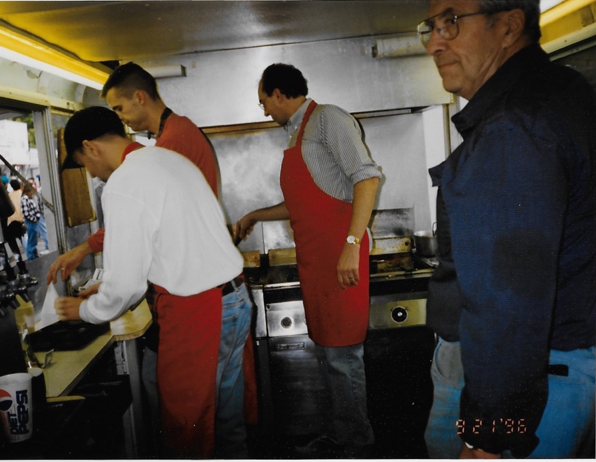
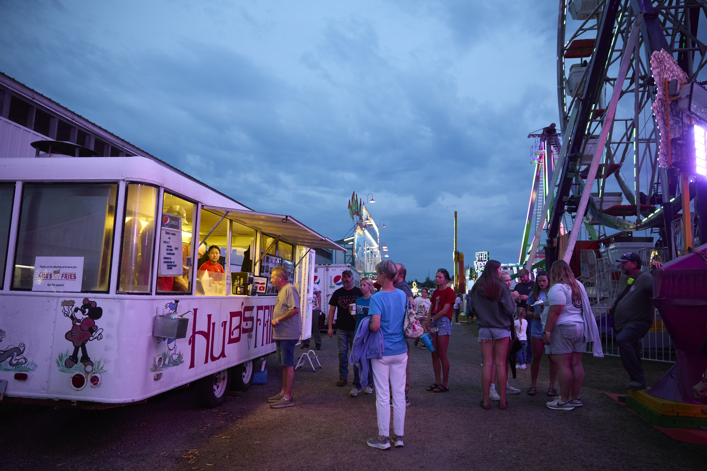
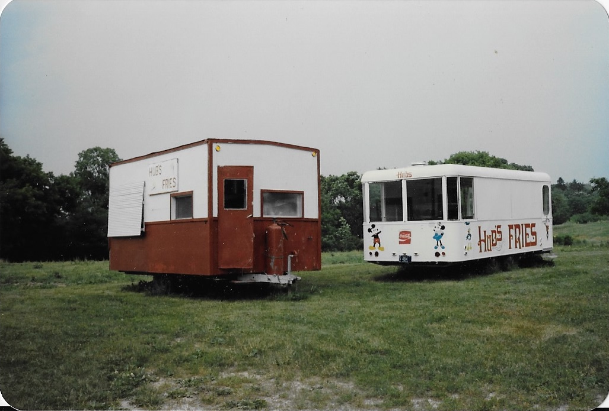
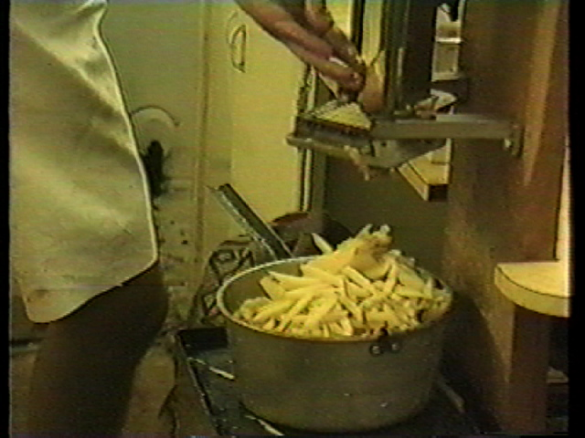
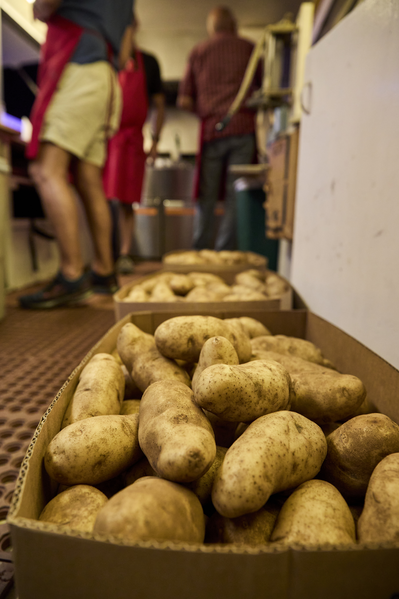
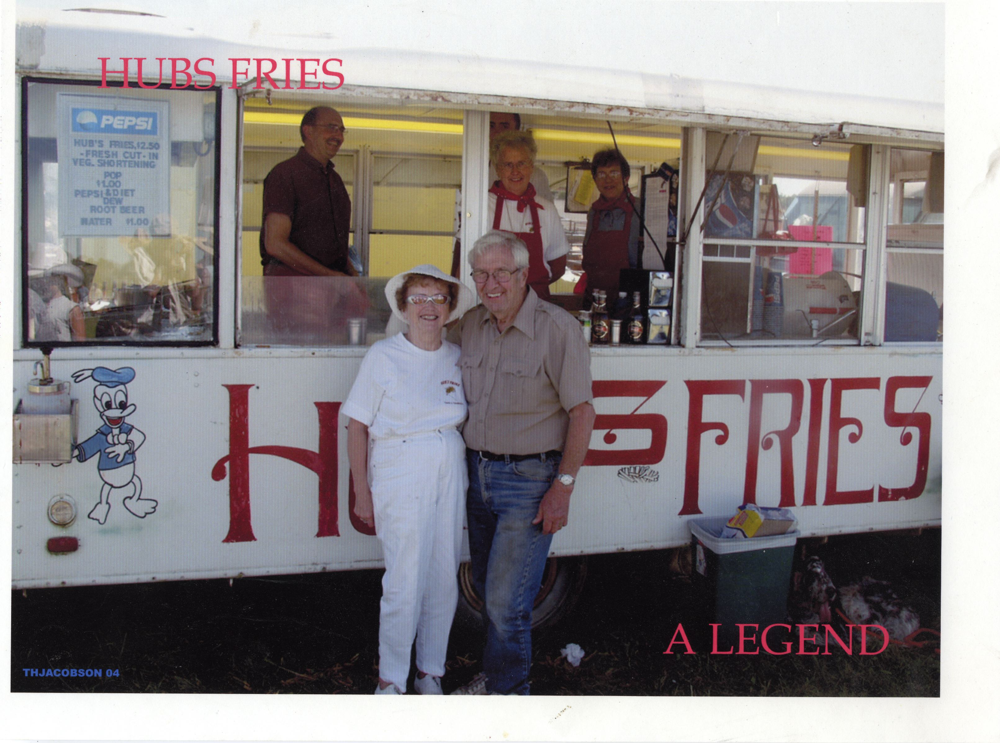
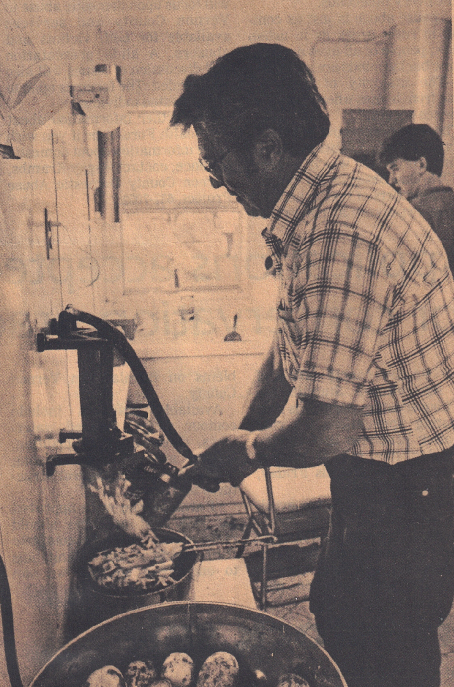

The origin of Hub’s Fries traces back to an unexpected “ketchup problem” at the 1974 Vernon County Fair. Lowell Hubbard, then managing the Liberty Pole United Methodist Food Stand (now Cornerstone Academy Stand), observed children from Clinsman’s Fries using his stand’s refillable ketchup bottles without purchasing anything. After a conversation with Mr. Clinsman, who provided ketchup in small packages similar to those McDonald’s distributes. A turning point came when Mr. Clinsman suffered a burn at another fair and asked Lowell for help selling fries. This assistance eventually led to Lowell purchasing the stand in 1975, much to the surprise of his family.
OUR STORY
The stand has been run by Cyndy (oldest child) and her daughter Joy. They recently celebrated 50 years of business and had a one final celebration at the Vernon County Fair in Septermber 2025. Many friends and family members came back including Scott Wilkins who spent many hours in the stand over the years.

GALLERY





